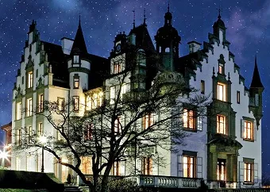

Puzzle 35: Geburtstagsparty zur Geisterstunde
Das Schlossgespenst Hui-Wusch feierte kürzlich seinen 800.Geburtstag und hatte seine Geisterfreunde eingeladen.
Diese kamen einzeln und nacheinander auf Hui-Wuschs Schloss.
Alle Gäste brachten eine Zutat mit, aus der die
Moorhexe im eigens dafür mitgebrachten Kochgeschirr das Lebenswasser «Aqua Vitae» brauen konnte.

- Gäste
- Alter
- Ankunft
- Zutaten
- Abraxas
- 544
- 23:15
- Drachenblut
- Flick-Flack
- 581
- 23:20
- Fliegenpilze
- Dschinn
- 687
- 23:25
- Kochgeschirr
- Elfe
- 752
- 23:30
- Krähenfüsse
- Hurrlibutz
- 811
- 23:35
- Mistelzweig
- Lili
- 857
- 23:40
- Ochsenhorn
- Luuspelz
- 932
- 23:45
- Schlangenhaut
- Moorhexe
- 998
- 23:50
- Teufelskraut
Die folgenden Aussagen sind wahr:
- Der erste Gast ist nächstälter als jener, der die Krähenfüsse mitbringt. Die Moorhexe ist älter als 700 Jahre.
- Als letztes traf Rabe Abraxas ein. Er brachte die Schlangenhaut mit.
- Hexe Lili traf zu einer ungeraden Zeit ein und nutzte im Verlauf der Nacht den Umstand, dass alle Freunde zusammen waren, um diese zu ihrem Milleniumgeburtstag in zwei Jahren einzuladen. Lili brachte die Fliegenpilze.
- Genau um halb tauchte Teufel Luuspelz auf. Er ist nächstälter als Rabe Abraxas und brachte keine Krähenfüsse mit.
- Die Moorhexe erschien mehr als eine halbe Stunde vor Mitternacht.
- Die Elfe traf zu einer Zeit ein, die auf die Ziffer 0 endet.
- Dschinn und Hurrlibutz wurden im selben Jahrhundert geboren, Dschinn ist der ältere. Die Elfe ist nicht genau 857 Jahre alt.
- Eine der Zutaten wächst ausschliesslich im Garten des Geistes, der auf dem Underberg wohnt. Dieser Geist ist nächstjünger als jener, der 10 Minuten früher - zu einer ungeraden Zeit - eintraf.
- Falls die Elfe älter ist als Flick-Flack, dann treffen sie - in zu bestimmender Reihenfolge - direkt aufeinanderfolgend ein, andernfalls liegen mehr als 20 Minuten zwischen ihren Ankunftszeiten.
- Die Moorhexe hätte den Mistelzweig gerne eher zur Verfügung gehabt, jedoch erschien der entsprechende Geist erst um 23:45 Uhr.
- Dschinn brachte das Ochsenhorn.
- Flick-Flack ist älter als mindestens drei andere Gäste. Er brachte das Drachenblut.
- Der Altersunterschied zwischen Dschinn und der Moorhexe beträgt weniger als 200 Jahre.
Welcher Gast hat welches Alter, wann ist er eingetroffen und was für eine Zutat hat er mitgebracht?
©1997 - 2026 www.mathematik.ch |🔍